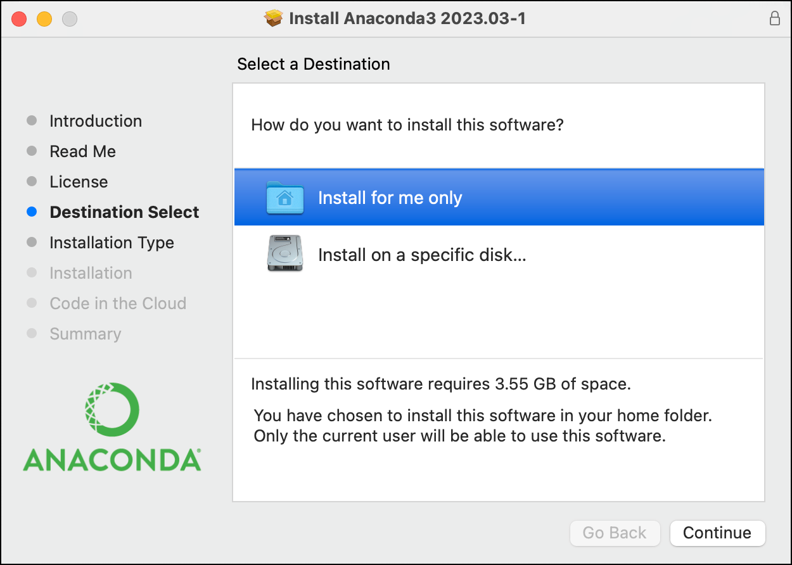
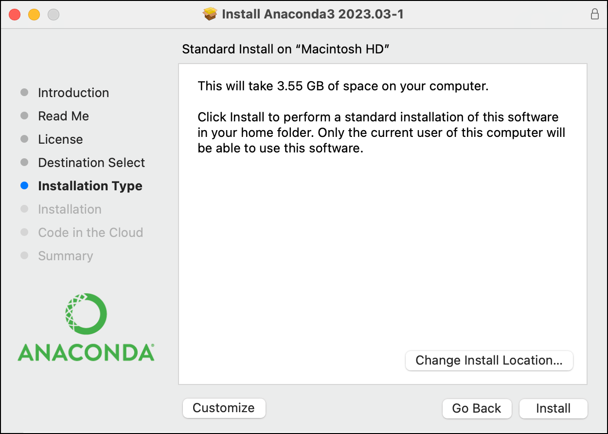
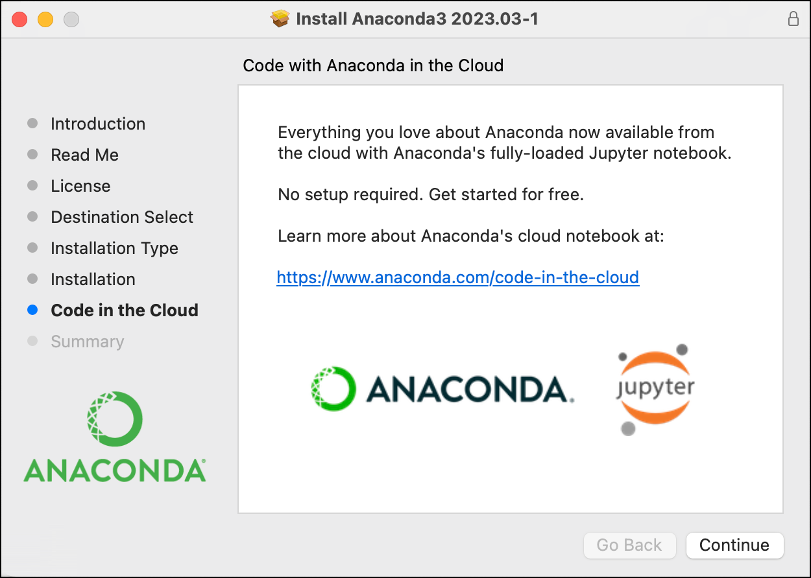
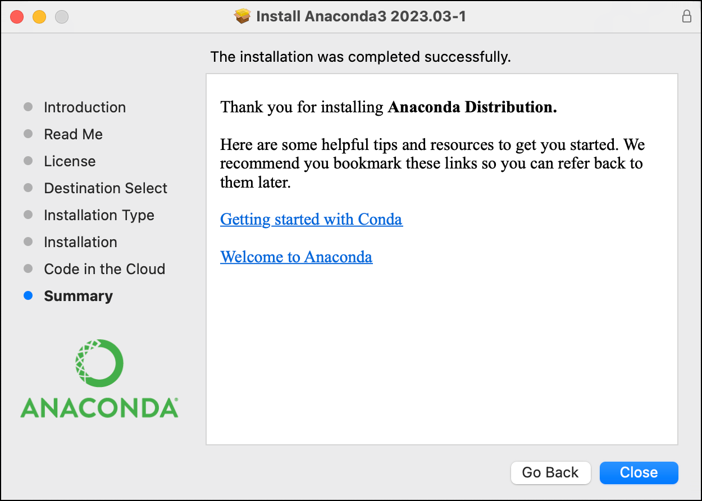
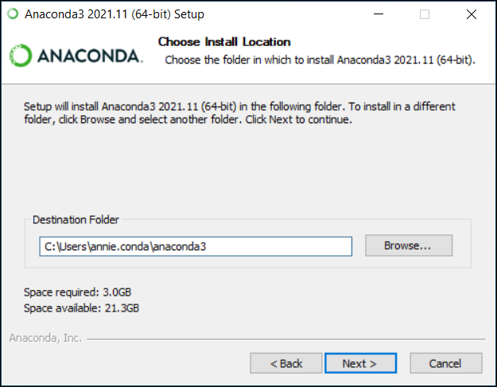
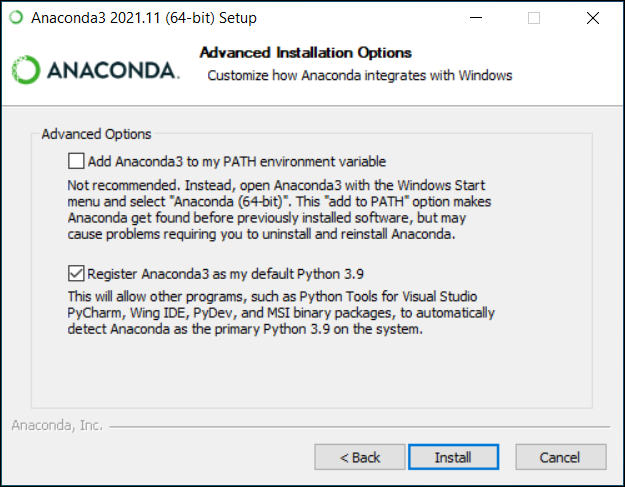
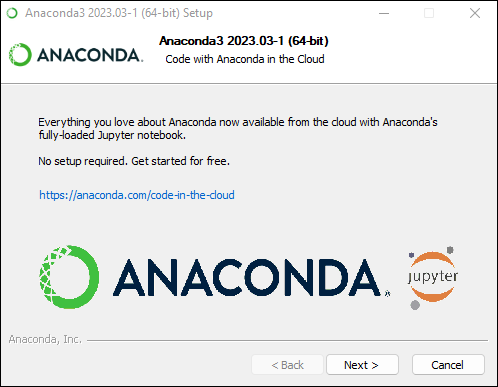
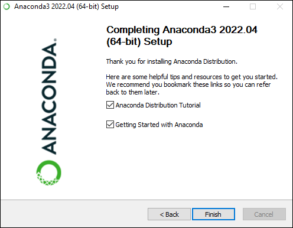
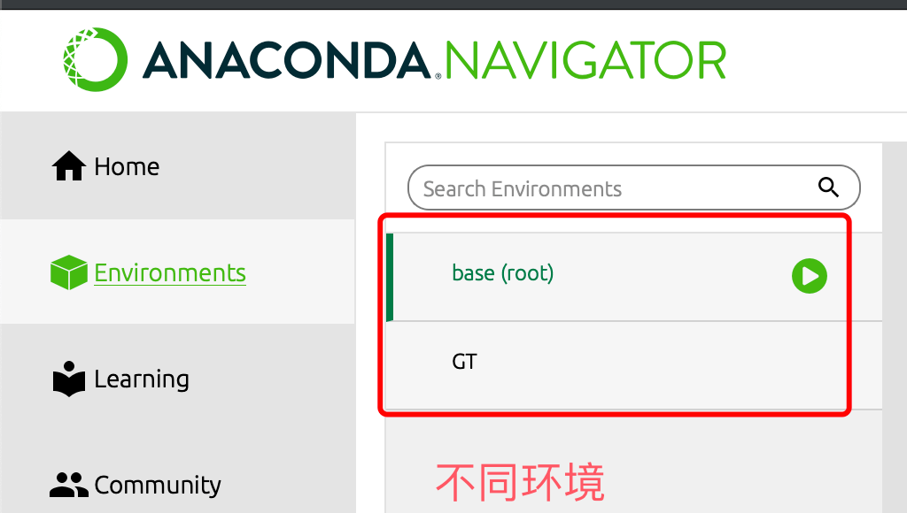
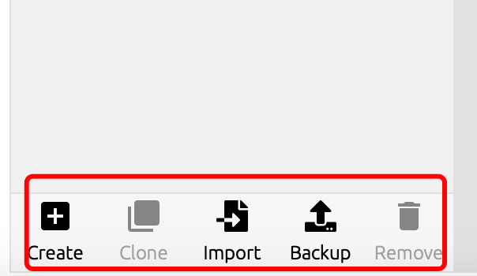

Anaconda チュートリアル
Python クオンツでは、Anaconda ツールを直接使用して効率を高め、インストールの手間を省くことができます。
Anaconda はデータサイエンスと機械学習のソフトウェアスイートであり、多くのツールやライブラリが含まれているため、プログラミング、データ分析、機械学習モデルの構築をより簡単に行うことができます。
Anaconda のパッケージとその依存関係および環境を管理するツールはcondaコマンドです。詳細は記事の後半で説明します。
従来のPython pipツールと比較すると、Anaconda のcondaは、異なる環境間の切り替えがより簡単で、環境管理が比較的シンプルです。
なぜ Anaconda を選ぶのか？
簡単インストール：Anaconda のインストールはアプリケーションをインストールするのと同じくらい簡単で、よく使うツールが多数あらかじめインストールされているため、個別に設定する必要はありません。
パッケージマネージャー：Anaconda には Conda というパッケージマネージャーが含まれており、ソフトウェアパッケージのインストール、更新、管理に使用します。Conda は Python だけでなく、他の多くの言語のパッケージ管理もサポートしています。
環境管理：Anaconda を使用すると、複数の独立した Python 環境を簡単に作成および管理できます。たとえば、python2 と python3 の環境をインストールして、自由に切り替えることができます。これは、異なるプロジェクトで異なるライブラリやツールのバージョンを使用する際に、バージョンの競合を避けるために非常に役立ちます。
統合されたツールとライブラリ：Anaconda には、NumPy、Pandas、Matplotlib、SciPy、Scikit-learn など、データサイエンス、機械学習、科学計算に重要なツールやライブラリが多数バンドルされています。
Jupyter ノートブック：Jupyter は対話型のコンピューティング環境で、複数のプログラミング言語をサポートしていますが、Anaconda では主に Python で使用されます。ユーザーは、ライブコード、数式、可視化、説明テキストを含むドキュメントを作成および共有できます。
Spyder 統合開発環境：Anaconda には Spyder が統合されています。Spyder は科学計算とデータ分析に特化した開発環境で、コード編集、デバッグ、データ可視化などの機能を備えています。
クロスプラットフォーム：Anaconda は Windows、macOS、Linux などのオペレーティングシステム上で動作するため、クロスプラットフォームのソリューションとなっています。
コミュニティサポート：Anaconda には大規模なコミュニティがあり、ユーザーはコミュニティフォーラムでヘルプを得たり、経験を共有したり、問題を解決したりできます。
Anaconda のインストール
Anaconda インストーラーのダウンロード先：https://www.anaconda.com/download。
Anaconda は Windows、macOS、Linux などのオペレーティングシステム上で動作し、各プラットフォームに応じてインストーラーをダウンロードできます：

macOS プラットフォーム
インストールプロセスも簡単です。ダウンロードしたインストーラーをダブルクリックして開き、選択し、Install for me only:

クリックしてinstallボタンを押します：
インストールが完了したら、クリックしてContinueボタンを押すと、インストール完了の画面が表示されます：


macOS プラットフォームのインストールは公式サイトを参照できます：https://docs.anaconda.com/free/anaconda/install/mac-os/
Win プラットフォーム
Win プラットフォームは macOS と似ています。インストーラーをダウンロードしたら、インストーラーをダブルクリックし、いくつかの契約に同意して、簡単な場合はデフォルト設定のまま Next ボタンを押していくだけです。
インストールディレクトリを選択：
"Advanced Installation Options" で "Add Anaconda to my PATH environment variable."（「Anaconda を環境変数に追加」）にチェックを入れないでください。チェックを入れると、他のプログラムの使用に影響を与えるためです。

Install ボタンをクリックしてインストールを実行します。インストールが成功すると、次の画面が表示されます：

クリックしてNextボタンを押します：

Win プラットフォームのインストールは公式サイトを参照できます：https://docs.anaconda.com/free/anaconda/install/windows/
Linux プラットフォーム
Linux プラットフォームでは、次のコマンドでインストールできます。インストールするバージョン番号は置き換えることができます：
curl -O https://repo.anaconda.com/archive/Anaconda3-2023.09-0-Linux-x86_64.sh
Linux の各プラットフォームのインストールは公式サイトを参照できます：https://docs.anaconda.com/free/anaconda/install/linux/
Anaconda インターフェースの使い方
インストールが完了すると、Anaconda の管理インターフェースでさまざまな環境を表示およびインストールできます：

クリックしてEvironmentsインストール済みの環境を表示できます：
下部には環境の作成と削除のボタンもあり、自由に操作できます：

conda コマンド
インターフェース操作に加えて、コマンドラインで conda を使用してさまざまな環境を管理することもできます。
condaは Anaconda ディストリビューションのパッケージマネージャーであり、ソフトウェアパッケージのインストール、更新、アンインストール、およびさまざまな Python 環境の作成と管理に使用します。
以下は、よく使われる Conda コマンドとその簡単な説明です：
環境管理
"myenv" という名前の新しい環境を作成:
conda create --name myenv
指定バージョンの環境を作成：
conda create --name myenv python=3.8
上記のコードは、"myenv" という名前の新しい環境を作成し、Python バージョンを 3.8 に指定します。
環境をアクティブ化：
conda activate myenv
上記のコードは、"myenv" という名前の環境をアクティブ化します。
現在の環境を終了するには、次のコマンドを使用します：
deactivate
すべての環境を表示：
conda env list
上記のコードは、作成済みのすべての環境を表示します。
環境をコピー：
conda create --name myclone --clone myenv
上記のコードは、既存の環境をクローンして新しい環境を作成します。
環境を削除：
conda env remove --name myenv
上記のコードは、"myenv" という名前の環境を削除します。
パッケージ管理
パッケージをインストール：
conda install package_name
上記のコードは、"package_name" という名前のソフトウェアパッケージをインストールします。
指定バージョンのパッケージをインストール：
conda install package_name=1.2.3
上記のコードは、"package_name" の指定バージョンをインストールします。
パッケージを更新：
conda update package_name
上記のコードは、インストール済みのソフトウェアパッケージを更新します。
パッケージをアンインストール：
conda remove package_name
上記のコードは、インストール済みのソフトウェアパッケージをアンインストールします。
インストール済みのパッケージを表示：
conda list
現在の環境にインストールされているすべてのソフトウェアパッケージとそのバージョンを表示します。
その他のよく使うコマンド
ヘルプを表示：
conda --help
上記のコードは、conda コマンドのヘルプ情報を取得します。
conda のバージョンを表示：
conda --version
上記のコードは、インストールされている conda のバージョンを表示します。
パッケージを検索：
conda search package_name
上記のコードは、conda リポジトリ内で指定したソフトウェアパッケージを検索します。
不要になったパッケージをクリーンアップ：
conda clean --all
上記のコードは、conda のキャッシュをクリーンアップし、不要になったソフトウェアパッケージを削除します。
Jupyter Notebook（オプション）
Jupyter Notebook をインストール：
conda install jupyter
上記のコードは、Jupyter Notebook をインストールします。
Jupyter Notebook を起動：
jupyter notebook
上記のコードは、アクティブ化された環境で Jupyter Notebook を起動します。
その他の拡張機能
クリックしてノートを共有
ノートはこの記事の内容を拡張したものである必要があります！
記事投稿は、こちらをクリックしてください
登録招待コードの取得方法
ノートを共有する前にログインが必要です！
登録招待コードの取得方法